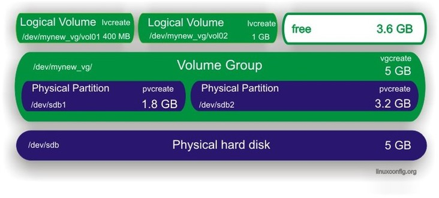

Logical Volume Management(LVM)¶
Create Partitions
Use your preferred partitioning tool to create partitions.
Create physical volumes
Use the pvcreate command to create physical volumes.
pvcreate /dev/sdb1 pvcreate /dev/sdb2
The pvdisplay command displays all physical volumes on your system.
pvdisplayAlternatively the following command should be used:
pvdisplay /dev/sdb1
Create Virtual Group
At this stage you need to create a virtual group which will serve as a container for your physical volumes. To create a virtual group with the name “mynew_vg” which will include /dev/sdb1 partition, you can issue the following command:
vgcreate mynew_vg /dev/sdb1
To include both partitions at once you can use this command:
vgcreate mynew_vg /dev/sdb1 /dev/sdb2
Feel free to add new physical volumes to a virtual group by using the vgextend command.
vgextend mynew_vg /dev/sdb2
Create Logical Volumes
From your big cake (virtual group) you can cut pieces (logical volumes) which will be treated as a partitions for your linux system. To create a logical volume, named “vol01”, with a size of 400 MB from the virtual group “mynew_vg” use the following command:
create a logical volume of size 400 MB -L 400 create a logical volume of size 4 GB -L 4G
lvcreate -L 400 -n vol01 mynew_vg
With a following example you will create a logical volume with a size of 1GB and with the name vol02:
lvcreate -L 1000 -n vol02 mynew_vg
Note the free size in virtual group.
vgdisplayCreate File system on logical volumes
The logical volume is almost ready to use. All you need to do is to create a filesystem.:
mkfs.ext3 -m 0 /dev/mynew_vg/vol01
the -m option specifies the percentage reserved for the super-user, set this to 0 if you wish not to waste any space, the default is 5%.
Extend logical volume
The biggest advantage of logical volume manager is that you can extend your logical volumes any time you are running out of the space. To increase the size of a logical volume by another 800 MB you can run this command:
lvextend -L +800 /dev/mynew_vg/vol01
The command above does not actually increase the physical size of volume, to do that you need to:
resize2fs /dev/mynew_vg/vol01
Remove logical volume
The command lvremove can be used to remove logical volumes. Make sure that before you attempt to remove logical volumes your logical volume does not have any valuable data stored on it, moreover, make sure the volume is unmounted.
lvremove /dev/mynew_vg/vol02 lvdisplay